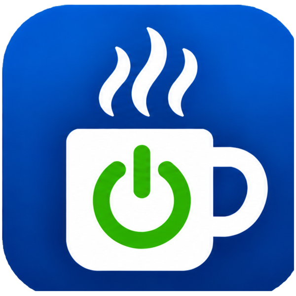

WINDOWS · PRODUCTIVITEIT
StayAwake
Houd je Windows-pc wakker wanneer jij dat nodig hebt. Een kleine, praktische tool die op de achtergrond in het systeemvak draait.
Portable · Windows x64 · Geen installatie nodig
Wat is StayAwake?
Soms wil je voorkomen dat Windows automatisch in slaapstand gaat. Bijvoorbeeld wanneer je een langdurige taak uitvoert, iets wilt volgen op je scherm of tijdelijk de standaardinstellingen voor energiebeheer wilt omzeilen.
StayAwake is daarvoor een eenvoudige oplossing. Je start de applicatie en bedient haar vanuit het pictogram in het Windows-systeemvak, zonder dat er voortdurend een venster open hoeft te staan.
Kenmerken
- Voorkomt dat je pc automatisch in slaapstand gaat zolang de tool actief is.
- Compacte bediening vanuit het Windows-systeemvak.
- Portable: geen installatieprocedure nodig.
- Zelfstandige Windows x64-applicatie: geen aparte .NET-installatie vereist.
Downloaden en gebruiken
- Download de nieuwste versie via de knop hierboven.
- Pak StayAwake-win-x64.zip uit in een map naar keuze.
- Start StayAwake.Tray.exe en gebruik het pictogram in het systeemvak.
Windows SmartScreen: bij de eerste start kan Windows waarschuwen voor een onbekende uitgever. StayAwake wordt momenteel zonder commerciële digitale ondertekening aangeboden. Controleer altijd of je de applicatie van de officiële MarchandSoftware-releasepagina hebt gedownload.